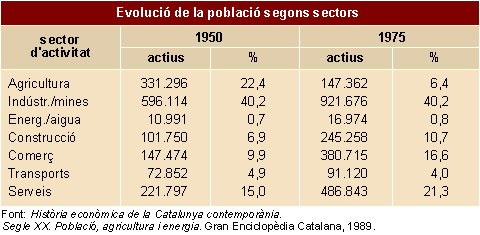

Textos expositius: escriure textos i paràgrafs amb estructura de comparació (contrast)


Com es redacten els textos i paràgrafs amb estructura de comparació (contrast)
Com en els altres tipus de textos expositius, abans de posar-nos a escriure caldrà organitzar acuradament la informació disponible. En aquest cas, ens caldrà controlar tres elements:
a) els objectes de la comparació;
b) les categories per les quals s'estableix la comparació;
c) les característiques que en sorgeixen.
|
En qualsevol dels dos esquemes de comparació (descripcions contraposades o separades), se seguiran les indicacions que s'han explicat a l'apartat de comprensió lectora. Cal saber que quan es comparen dos objectes és més llegible la comparació per descripcions contraposades. En canvi, si es comparen tres o més objectes, és millor utilitzar les descripcions separades. | |
Un cop establerts amb claredat els objectes que s'han de comparar, hi ha un notable marge per expressar la comparació, canvis d'ordre, èmfasi en un element o altre, etc.
En el cas dels textos tècnics o científics, és bo d'acompanyar el text amb un quadre que mostri les categories i característiques de la comparació.
Algunes marques que indiquen un text organitzat en forma de comparació són:
| – | "A diferència de..." |
| – | "Una mesura inadequada..." |
| – | "Mentre que..., els..." |
| – | "El resultat/L'efecte..." |
| – | "Igual a...", "s'assembla a...", "com...", |
| – | "Diferent de...", "difereix de..." |
| – | "Si comparem... amb..., trobarem que..." |
 Exercicis
Exercicis
1. Busqueu informació i compareu aquests dos conceptes, en cada cas:
- el punt i la coma (en quins casos usem l'un i l'altra);
- les consonants i les vocals (en quins casos es fan servir les unes i les altres);
- l'accent obert i l'accent tancat;
- el diftong i el hiat.
Escriviu-ne un breu text en què s'assenyalin les semblances i les diferències entre els dos termes comparats.

2. Construïu dos breus textos de comparació entre l'ordinador i la màquina d'escriure. En el primer comparareu els dos estris contraposant-ne les característiques; en el segon, fareu la comparació per mitjà d'una descripció separada.
3. Redacteu un text de comparació per explicar el gràfic següent:
